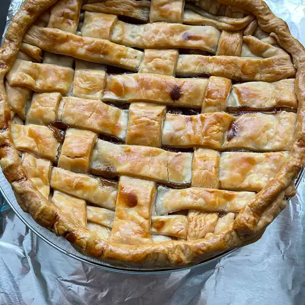

Homemade Lasagna

Description
This easy apple pie was my mother's recipe. I make this simple recipe for homemade pie all the time; I love it.
I often add a dash of nutmeg, so you can put that in if you wish.
Ingredients
- Double-crust pie
- White sugar
- Ground cinnamon
- Sliced apple
- Butter
Steps
-
Preheat the oven to 450 degrees F (230 degrees C).
-
Line a 9-inch pie dish with one pastry crust; set second one aside.
-
Combine 3/4 cup sugar and cinnamon in a small bowl. Add more sugar if your apples are tart.
-
Layer apple slices in the prepared pie dish, sprinkling each layer with cinnamon-sugar mixture.
-
Dot top layer with small pieces of butter. Cover with top crust.
-
Bake pie on the lowest rack of the preheated oven for 10 minutes. Reduce oven temperature to 350 degrees F (175 degrees C) and continue baking until golden brown and filling bubbles, 30 to 35 minutes more.
-
Serve warm or cold.